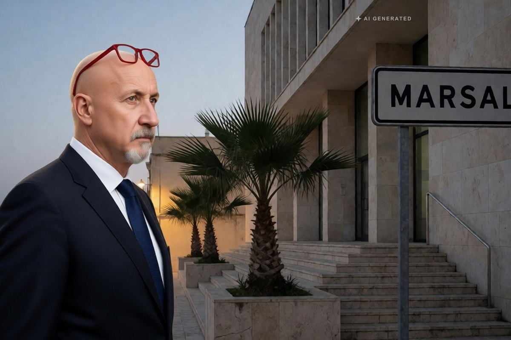

Cronaca · 7 novembre 2026
Marsala, una sentenza che il tribunale non ha mai scritto

Un'avvocata è stata interdetta dalla professione. Secondo la procura consegnava ai clienti atti contraffatti, fra cui una perizia da oltre 184mila euro su un caso di responsabilità medica, mentre le cause non erano mai state avviate.
di Franco Zanghì
Il giudice per le indagini preliminari di Marsala ha disposto per un'avvocata il divieto temporaneo di esercitare la professione, su richiesta della procura. L'ordinanza è stata eseguita il 3 novembre, dopo l'interrogatorio dell'indagata, e la notizia è stata diffusa il 6. Le contestazioni sono falso materiale in atto pubblico, truffa aggravata e patrocinio infedele.
Le carte che sembravano del tribunale
Secondo l'accusa, fra il luglio del 2023 e il maggio del 2024 l'avvocata avrebbe consegnato ai clienti documenti che avevano l'aspetto di atti del tribunale ma erano contraffatti. In questo modo li avrebbe convinti che le loro cause civili fossero state avviate e stessero procedendo, continuando intanto a farsi pagare l'onorario.
La perizia da 184mila euro
L'episodio più pesante riguarda una consulenza tecnica che appariva disposta dal giudice in un caso di responsabilità medica. La vicenda riguardava la morte del figlio dei suoi assistiti, e il documento indicava un risarcimento di oltre 184mila euro. Per l'accusa quella consulenza era interamente inventata, e la causa non è mai stata avviata.
Che cosa significa l'interdizione
Il divieto temporaneo di esercitare la professione è una misura cautelare: non punisce, previene. Serve a impedire che, mentre le indagini sono in corso, l'indagato possa ripetere la condotta contestata usando la stessa posizione professionale. Vale per un periodo stabilito dal giudice e può essere rinnovata o revocata.
Fra le contestazioni c'è il patrocinio infedele, un reato poco conosciuto fuori dai tribunali: riguarda l'avvocato che, nel difendere un cliente, ne tradisce gli interessi. È la fattispecie che la legge prevede proprio per il caso in cui chi dovrebbe tutelare qualcuno si gira dall'altra parte.
Per l'avvocata vale la presunzione d'innocenza fino alla sentenza definitiva, e la misura interdittiva è impugnabile.
Il punto
Vale la pena fermarsi un momento su che cosa significa, questa storia, se le accuse verranno provate. Una famiglia perde un figlio. Si affida a un avvocato per avere giustizia. E per mesi crede che la giustizia stia camminando, con tanto di carte, di numeri e di cifre. Se quelle carte erano false, a quella famiglia è stato tolto anche questo. È per questo che in un mestiere come quello dell'avvocato la fiducia non è un dettaglio: è lo strumento di lavoro.
Fonti
- Ansa, «Falsifica sentenza, avvocato sospeso da esercizio professione a Marsala», 6 novembre 2026
- NewSicilia, «Marsala, avrebbe falsificato una sentenza e una perizia da oltre 184mila euro: avvocata sospesa dalla professione», 6 novembre 2026
- Risoluto, «Marsala, avvocato accusata di avere falsificato una sentenza per ottenere denaro dai clienti», 6 novembre 2026
- Trapanisi, «Marsala, avvocata accusata di truffa e falsificazione di atti: sospesa dalla professione», 6 novembre 2026
Il nome dell'avvocata, pubblicato da alcune testate locali, non compare in questa pagina: si tratta di una misura cautelare interdittiva nella fase delle indagini, e non di una condanna. Sulla data dell'ordinanza le fonti non coincidono fra il 3 e il 4 novembre.